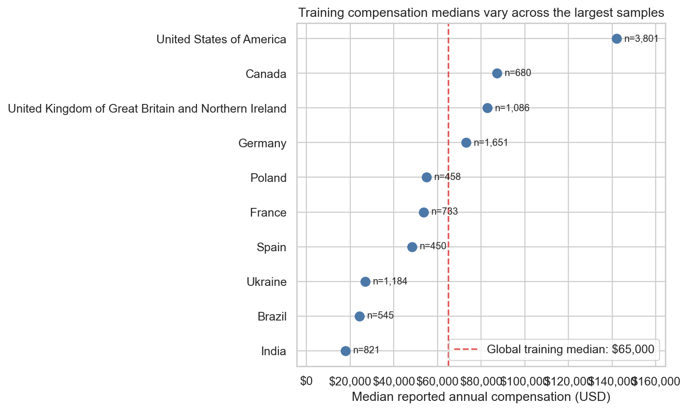
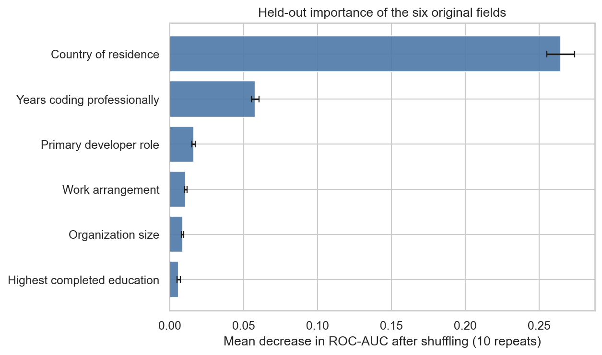
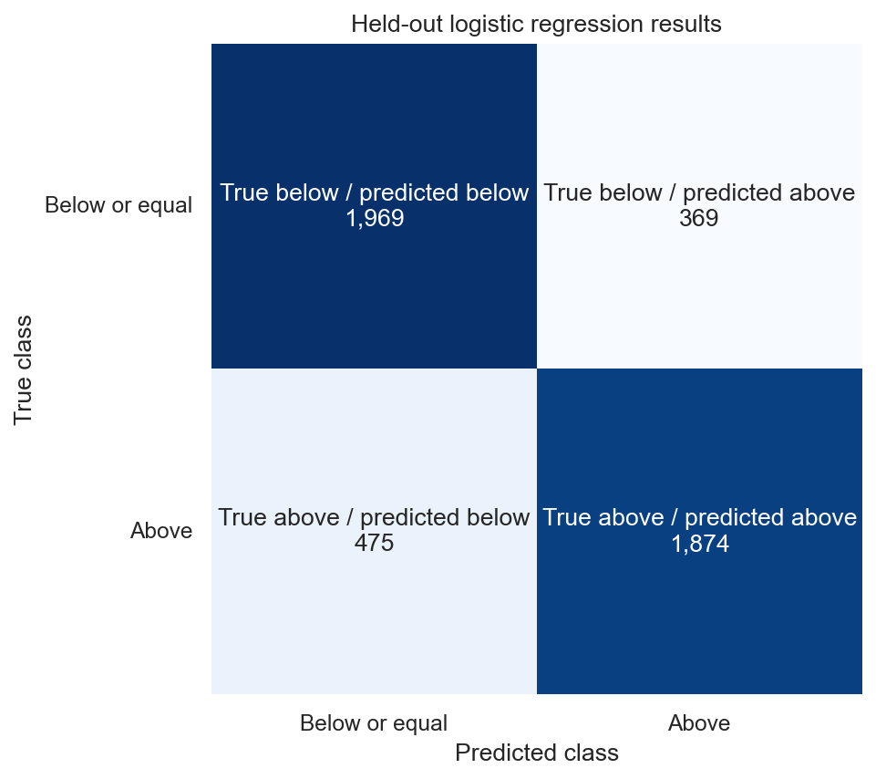

2024 Stack Overflow Developer Survey
Above the Median—But Whose Median?
Four lessons about what six reported characteristics can—and cannot—tell us about developer compensation.

I studied 23,435 respondents with usable annual compensation. “Above the median” means strictly above the training sample's worldwide cutoff of $65,000—not above an industry standard or a measure of career success.
1. Which characteristics mattered most?
Country of residence dominated. Shuffling country reduced the model's ranking score by 0.2647, compared with 0.0579 for professional coding experience, the second-ranked field.
Role, work arrangement, organization size, and education had smaller effects. These are patterns the model used, not proof that changing any characteristic causes pay to change.

2. Does the worldwide cutoff mean the same thing everywhere?
No. The largest training samples ranged from a $142,000 median in the United States to $17,945 in India.
Among 3,527 held-out respondents in countries with enough training data, 27.4% switched above/below labels when their country's median replaced the worldwide cutoff. Neither view adjusts for local prices or living costs.
3. How accurate was the model on unseen respondents?
The model correctly classified 82.0% of 4,687 held-out respondents, compared with 49.9% for a baseline that ignored respondent details.
It found 79.8% of respondents truly above the cutoff. The errors still matter: 369 below-cutoff respondents were placed above it, while 475 above-cutoff respondents were missed.

4. What happened in a fictional experience scenario?
Both profiles used the same observed combination: United States, full-stack developer, bachelor's degree, an organization with 100–499 employees, and remote work.
| Profile | Experience | Predicted probability | Predicted class |
|---|---|---|---|
| Lower experience | 4 years | 92.3% | Above cutoff |
| Higher experience | 14 years | 97.0% | Above cutoff |
The probability rose by 4.8 percentage points, but both profiles stayed in the same class. This comparison is illustrative, not a forecast that ten more years will cause one person's pay to rise.
What should readers keep in mind?
The survey was voluntary, compensation was self-reported total pay, and dollar conversion does not capture purchasing power. Results describe eligible respondents, not all developers.